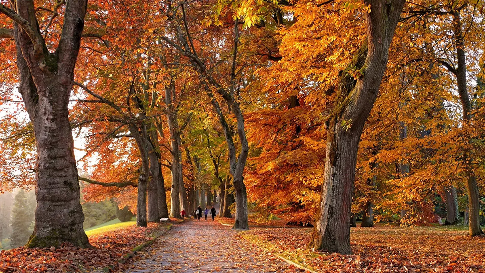
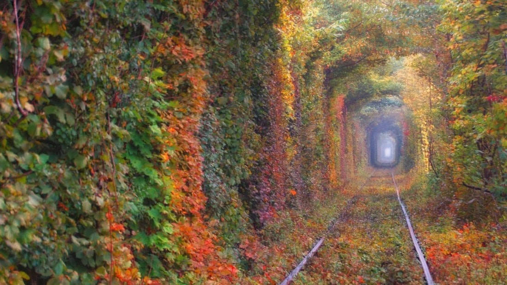
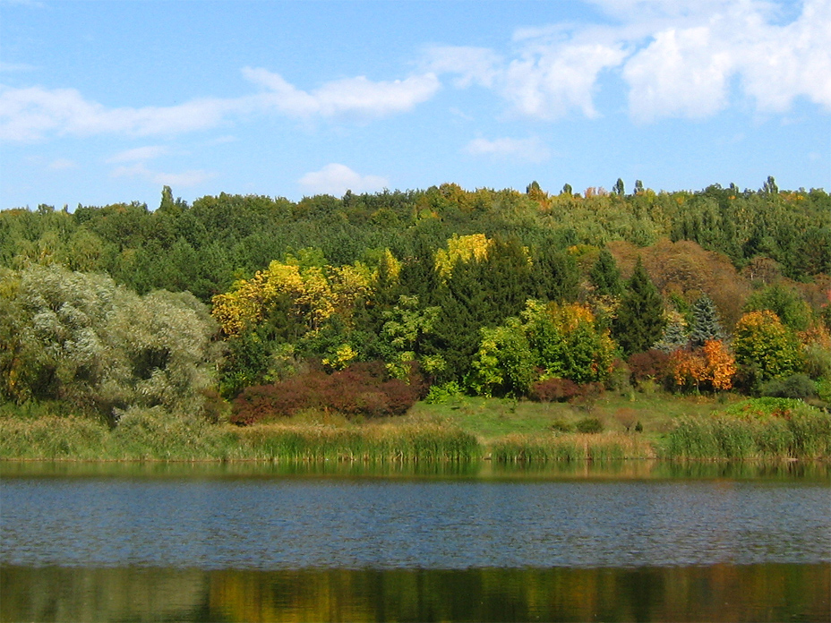
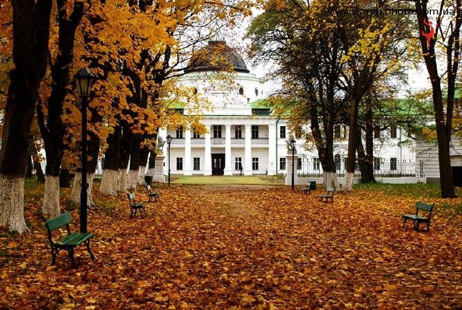
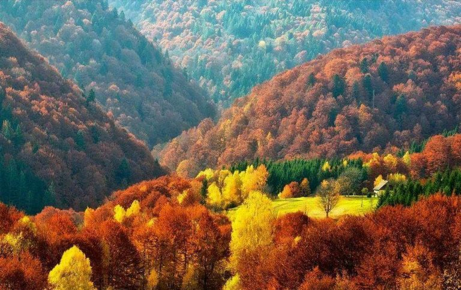
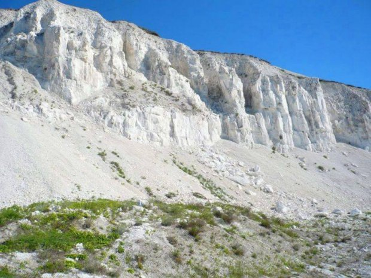

Осінь
Золота осінь – одне з найбільш цікавих і гарних пір року. Правда, не всі погодяться з цим фактом – у деяких людей осінь асоціюється зі старінням, і в світі вистачає людей, що віддають перевагу іншим порам року. Але хіба не прекрасні осінні ліси і парки, з їх жовтим і червоним листям? Недарма саме осінь надихала багатьох поетів, письменників і художників.
10 цікавих фактів про осінь
- До 18-го століття в Київській Русі вважалося, що осінь починається не 1, а 23 вересня, а закінчувалася 25 грудня.
- Осіннє рівнодення припадає на 22-23 вересня. Тому раніше осінь і відраховували з 23-го числа, а не з 1-го.
- У Південній півкулі осінніми місяцями є березень, квітень і травень.
- Осіння депресія – реально існуючий діагноз. Нею страждає близько 5% населення країн, в яких осінь є.
- За статистикою, на осінні місяці доводиться більше весіль, ніж на зимові, літні або весняні.
- Психоаналітики відзначають, що восени у багатьох людей притупляється почуття страху.
- Етимологічно слово «осінь» означає «час жнив» або «час збирання врожаю».
- Вчені встановили, що люди, народжені восени, в середньому живуть довше, ніж ті, хто народився в інші місяці.
- Колись кельти, які населяли територію Ірландії, вважали осінніми місяцями серпень, вересень і жовтень.
- Осіннє бабине літо в США називається індіанським, в Німеччині та Австрії – старечим, а на Балканах – циганським.
ТОП-5 місць для осінньої подорожі по Україні
З приходом осені не варто сидіти вдома. Навпаки, саме час для нових приємних вражень та захоплюючих краєвидів.
Адже саме восени міста та пам’ятки архітектури виглядають ще більш величаво і загадково на фоні осіннього неба та золотавих барв.
В Україні є безліч цікавих місць, які варто відвідати. А ось якщо ви бажаєте зробити це саме восени, пропонуємо добірку варіантів для подорожі осінньою країною.
- Рівненщина, Тунель Кохання
- Полтавщина, Дендропарк
- Чернігівщина, Заповідник «Качанівка»
- Карпати
- Харківщина, Дворічанський природний парк
Рівненщина, Тунель Кохання
Тунель Кохання в с. Клевань унікальний тим, що заростями дерев, кущів, які сплелися між собою, утворився дивовижний щільний коридор. Найкращий час для подорожі туди навесні і восени, коли там зелено і золотаво.
Полтавщина, Дендропарк
Більшість з нас знає про красу осіннього парку «Софіївка» в місті Умань. Тому, якщо ви вже не тільки чули, а й відвідали Софіївський дендропарк, пропонуємо звернути увагу на ще одне місце для спокою та насолоди осінніми краєвидами.
Чернігівщина, Заповідник «Качанівка»
Національний історико-культурний заповідник «Качанівка» існує на базі дворянської садиби кінця ХVІІІ – поч. ХХ ст., котра унікальна за своєю архітектурною самобутністю, історичною цінністю та своєрідністю ландшафту.
Карпати
Осінь - саме час побути серед мальовничих Карпатських гір, побродити лісами та сповна насолодитися чистим карпатським повітрям. Локацію для поїздки можете обрати будь-яку.
Харківщина, Дворічанський природний парк
У Харківській області знаходиться цікава і унікальна природна пам'ятка – Крейдяні гори. Крейдяні схили утворилися за часів палеогенового моря понад 70 млн років тому. Гори простягаються на кілька десятків кілометрів уздовж річки Оскіл.